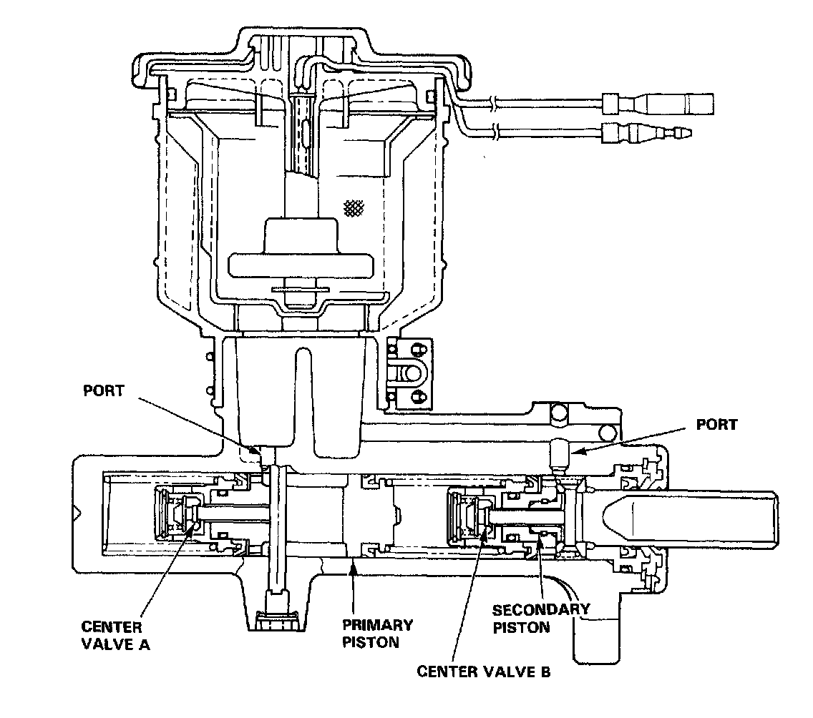
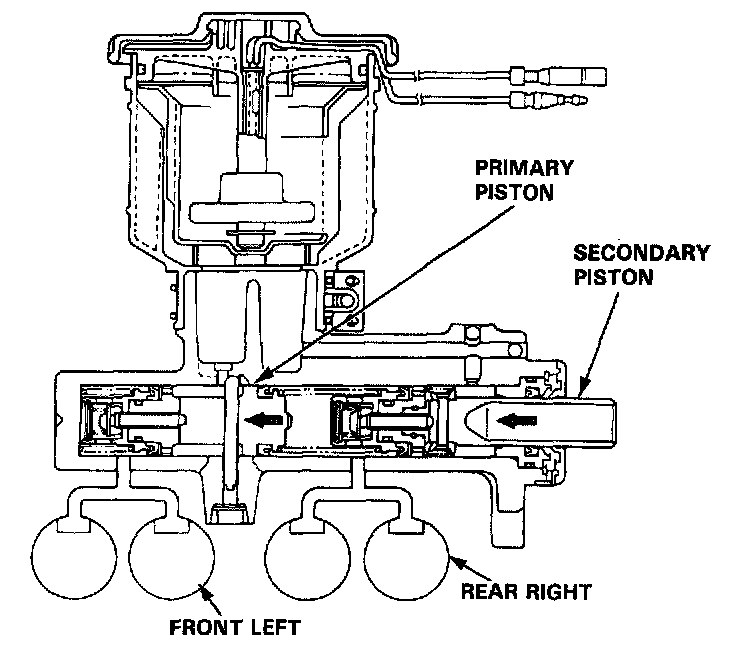
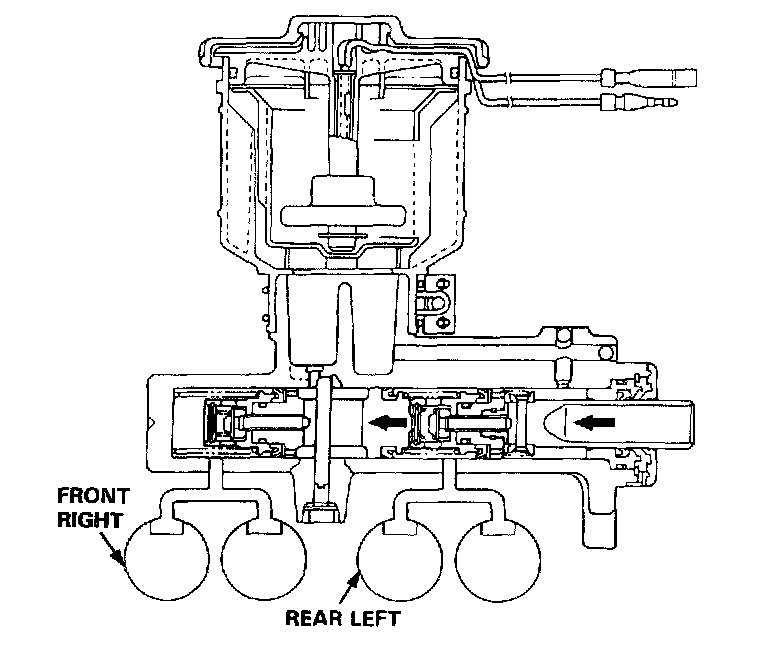

Brake Master Cylinder: Description and Operation

1. Construction
- A tandem master cylinder with center valves are used to improve braking system safety.
- The master cylinder has one reservoir tank which is connected to the cylinder sections by two small holes. It has two pistons-primary and secondary, which are diagonally connected with the calipers so that the fluid pressure works separately on each system Front right wheel & rear left wheel, and front left wheel & rear right wheel.
- A stop bolt for controlling movement of the primary piston is provided at the side of the master cylinder body. A reed switch for detecting the brake fluid volume is also provided on the cap of the reservoir tank.
2. Operation
- When the brake pedal is depressed, the secondary piston is pushed through the brake booster and center valve B is closed so that the fluid pressure is generated on the secondary side. At the same time, the primary piston is pushed by the secondary fluid pressure and center valve A is closed so that braking fluid pressure is generated both on the primary and secondary sides.
- When the brake pedal is released, the primary and secondary pistons are returned to the original positions by the brake fluid pressure and piston spring.
3. Responses when fluid is leaking

(1) In case of leaking from the primary system
- Since the fluid pressure on the primary side does not rise, the primary piston is pushed by the fluid pressure of the secondary piston and the tension of the piston spring until the end hits on the cylinder; the braking is performed by the fluid pressure on the secondary side.

(2) In case of leaking from the secondary system
- The secondary piston does not produce fluid pressure, keeps moving ahead, hits on the end surface of the primary piston so that the primary piston is pushed under the same condition as an ordinary rod; the braking is performed by the fluid pressure on the primary side.